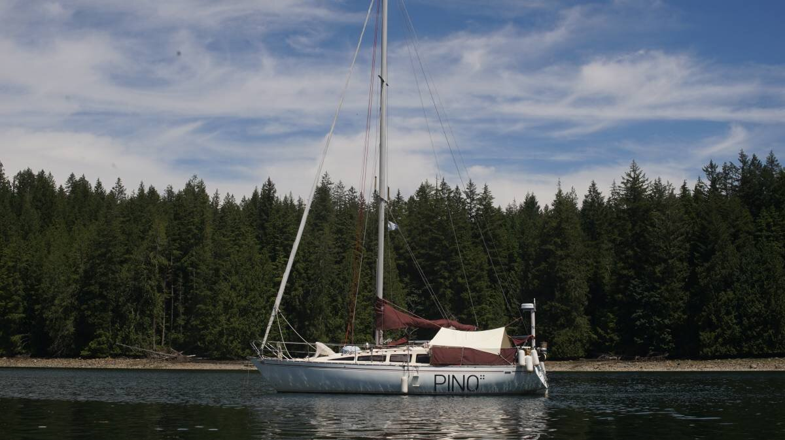

boom tent
2021.10.24
Victoria, Canada
Click below dates for more recent updates:
To shield us from the rain in the winter, and from the sun in the summer, we decided to build a tent for our boom. If we so chose, we could also hang it from the end of the boom to the backstay to shield the cockpit. In the interest of building things that last, we didn't want to use those cheap plastic tarps sold in hardware stores.
Fabric stores, like most businesses nowadays, suffer from lack of inventory due to a disruption in the supply chain. Jeunes Brothers in Victoria had many empty rolls. We walked in looking for canvas and found Sunforger's boat shrunk, a 100% 10 oz cotton marine canvas that is treated to repel both mildew and water.
Sunbrella was 4 times the price of this material. Although, the canvas was only available in off-white and a light green color. We picked two rolls of off white. Because they didn't have enough material in store for our project, they sold us the second roll at a good price. The boom tent is shorter than we wanted, but it is better than no boom tent at all. When stores are out of a product and the clerk says they'll get some again soon, that usually means they don't know when they will, and the sad truth is they may not get any at all. It is best not to rely on up-in-the-air promises and to work with what there is.
We measured and cut two even lengths of canvas, with plans to sow them together. The seam would lie over the top of the boom. Our friend Kay taught us how to make a French seam.
We overlapped the two pieces of canvas on the floor, aligning them perfectly, and used a stapler to secure them together. The staples were fixed a short distance away from the place where we'd planned to run our stitches. We stitched the two together with our friend's sewing machine. We used uv-resistant sail thread left over from when we repaired our headsail cover.
With the two halves bound together, we removed the staples and ironed the seam flat, laying it over one side. Then, we flipped the whole thing over, made a fold near the seam, and ironed it flat. Our friends recommend the use of a clothes iron to flatten or re-orient seams, we found this technique incredibly useful! For more strength, we used a zig zag stitch to sew the seam down the whole length of the fold, following one edge, and then the other.
To keep the outer edges from unraveling we made a seam about all around. Using the same technique with the iron, we folded it over, and ran the iron overtop to keep the fold down before stitching it. The seam in the middle of the tent with the outer seam had now become very thick, their machine couldn't handle it so we skipped it and finished it by hand with a sewing awl.
The above photo is the main seam, laying over the boom. The end is folded over to show the underside.
We bought 4 bronze rings and some nylon webbing and stitched it onto the four corners.


We're wondering if it wouldn't be better to add 3 strands of webbing instead of one to spread out the weight. We'll test this and see if there's any stress.
We cut 4 ropes to size, passed them through each ring to secure the tent to various points along the boat.

2021.12.20
Victoria, BC, Canada
We added two extra lenghts of webbing and rings to each side of the boom tent, so there are now 6 in total (3 per side). The tent wasn't taut enough with 4, and caught into the wind—especially on windy winter days. The canvas is indeed weatherproof, rain pearls and slides right off. We are very happy with our choice.
2022.06.21
Cortes Island, BC, Canada
The boom tent is as useful in winter as it is in the summer. We've been using it to cover up the cockpit and it works so well! We hung a rope from the mast to the backstay, and overlaid the tarp on top, then all 6 attachment points are attached to various points on the boat. The best thing is it doesn't hide either of our solar panels, it starts after the first panel behind the mast, and stops before the one on our mini-bimini.
2023.04.26
Victoria, BC, Canada
Added two rings to the centerfold of the tent at both ends so we can raise it without using a rope to support it. It works quite well and is easier to put up or to take down. One ring is tied to the mast with a rope, the other is hooked to the backstay using a bungee cord.
2023.08.08
Hathayim Marine Park, Cortes Island
BC, Canada

If we don't tie the aft ring to the backstay, it droops down and creates a deep V which we can use as a large water collector. There's a lot of surface, so if it's raining hard it can fill bins very fast.